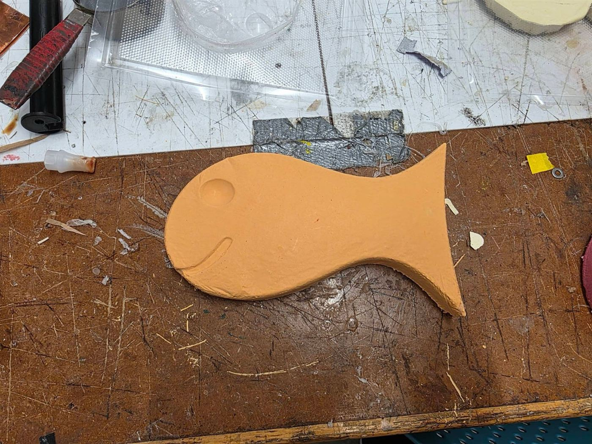
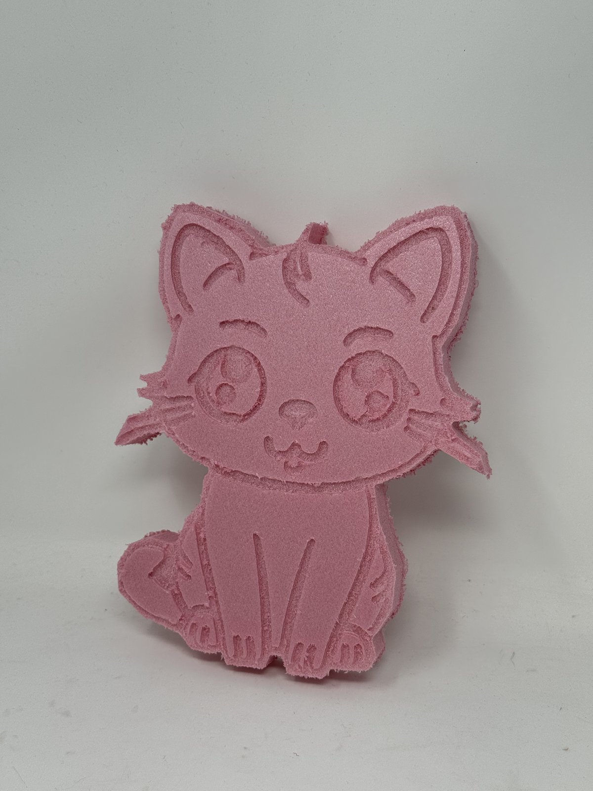
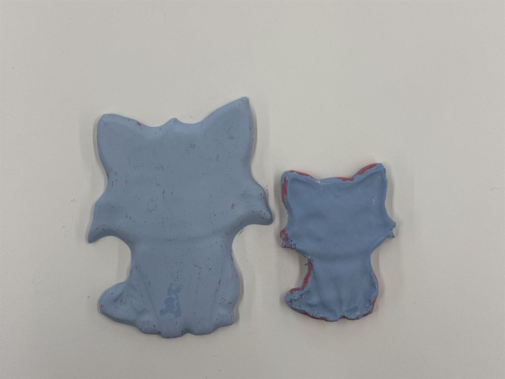
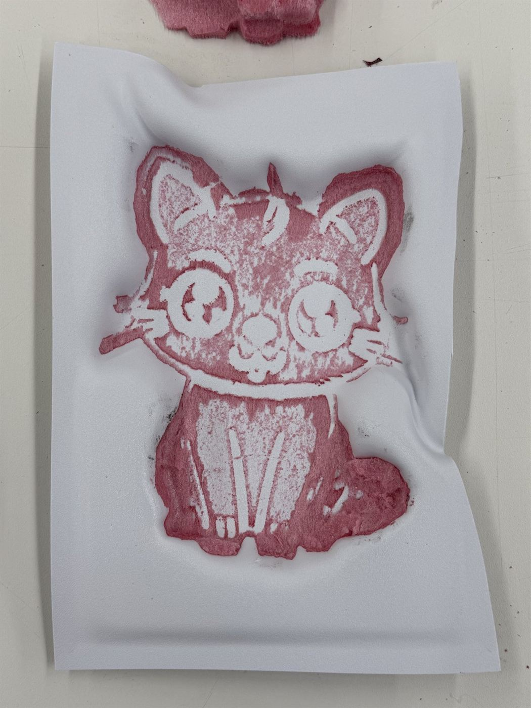

<div class="textcontainer">
<br></br>
<h1>Week 8: CNC Milling</h1>
<p class = "margin"></p>
The assignment was to make something on the CNC mill. The whole pipeline I went for: take a 2D drawing → CNC it as a relief into pink rigid foam → vacuum-form a thin plastic sheet over the foam to make a one-sided mold → pour plaster into the mold → pop out a finished plaster cast. Four totally different machines/processes in a row, and the whole thing falls apart if any one of them is off — which it absolutely was.
<p class = "margin"></p>
<h2>Team warmup: the goldfish</h2>
<p class = "margin"></p>
Before doing my own piece I did a group warmup with my teammates (Matthew, Alice, Aurora, and me). We modeled a goldfish in Fusion 360 and ran it on the Shopbot together as a way to learn the toolpath setup without anyone solo-piloting on their own design.
<p class = "margin"></p>
<p></p>
<p class="caption">Finished goldfish, milled out of orange foam on the Shopbot — our warmup before each of us ran our own design.</p>
<p class = "margin"></p>
<a href="goldfish.f3d" download>goldfish.f3d</a> (Fusion 360 source)
<p class = "margin"></p>
<h2>My piece: the cat</h2>
<p class = "margin"></p>
<h3>The artwork</h3>
<p class = "margin"></p>
I started from a clean cute-cat line drawing — big eyes, sitting pose, all single-stroke outlines that translate well to CNC-relief carving. I traced it into an SVG so the CNC could read it as toolpaths.
<p class = "margin"></p>
<p class="caption">The source line drawing — chosen for its big-eyed simplicity and single-stroke outlines that translate cleanly to CNC relief.</p>
<p class = "margin"></p>
<a href="cute-cat.svg" download>cute-cat.svg</a>
<p class = "margin"></p>
<h3>CNC milling the foam</h3>
<p class = "margin"></p>
Machine: Shopbot. Stock: pink rigid foam insulation (the dense kind, not the crumbly white EPS). Bit: 1/8" flat endmill — small enough to resolve the eye details, big enough to clear the wider regions without taking forever.
<p class = "margin"></p>
I ran it as a relief: the design pockets <i>down into</i> the foam so the cat's features stand proud, ready to receive a vacuum-formed mold on top.
<p class = "margin"></p>
<p></p>
<p class="caption">Big-cat relief milled into pink rigid foam with a 1/8" flat endmill — ears, whiskers, and eye detail all crisp.</p>
<p class = "margin"></p>
The result came out clean — every feature crisp, the foam's surface texture visible but tidy, ears and whiskers all intact.
<p class = "margin"></p>
<h3>Attempt 1: big cat → vacuum forming fails</h3>
<p class = "margin"></p>
The plan was to vacuum-form a thin clear plastic sheet over the foam cat, then use that plastic shell as a mold to pour plaster into. The class ran out of thin clear plastic, so I ended up using a thicker PLA sheet instead.
<p class = "margin"></p>
Two problems hit at once:
<ul>
<li>The big cat was too tall for the vacuum former's draw — the plastic sheet didn't have enough stretch left to wrap all the way around the contours.</li>
<li>The thicker PLA sheet stuck to the foam during cool-down, so even the partial wrap didn't release cleanly.</li>
</ul>
<p class = "margin"></p>
<h3>Attempt 2: small cat</h3>
<p class = "margin"></p>
I re-ran the CNC at a smaller scale that fit the vacuum former's working envelope. The smaller cat formed up much better — the PLA shell wrapped most of the contours this time.
<p class = "margin"></p>
<p></p>
<p class="caption">Both finished plaster casts side by side — small cat on the right, big cat on the left.</p>
<p class = "margin"></p>
(That photo is jumping ahead — both are the final plaster casts. The small one is on the right.)
<p class = "margin"></p>
<h3>Demolding the foam from the plastic</h3>
<p class = "margin"></p>
Foam doesn't like releasing from PLA at all. When I peeled the vacuum-formed shell off the small cat, chunks of pink foam tore off the model and stayed glued to the inside of the mold. You can see the residue in the negative mold here:
<p class = "margin"></p>
<p></p>
<p class="caption">Inside of the PLA mold after demolding the small cat — pink foam tore off the original and stuck to the mold cavity.</p>
<p class = "margin"></p>
Working theory: the rigid foam compresses just enough during vacuum forming for the PLA to grab into surface pores, and once it cools you've effectively got a mechanical lock between two materials with no draft. A release agent (mold release spray, or even just a thin oil coat) on the foam before vacuum forming would probably fix this — none was used here.
<p class = "margin"></p>
<h3>Plaster casting</h3>
<p class = "margin"></p>
With both molds (the partially-wrapped big one and the smaller, better-wrapped one) I mixed up some blue plaster and poured each one to see what came out.
<p class = "margin"></p>
The big-cat mold filled up with plaster but the cast was basically just a rough outline shape — the mold was too shallow to capture the eyes, mouth, ear interiors, and whiskers. The small-cat mold did capture more of the silhouette, but the plaster cast was completely seized inside the mold; I ended up destroying the mold to get the casting out.
<p class = "margin"></p>
<p class="caption">The two blue plaster cats after pouring — silhouettes captured, fine features lost.</p>
<p class = "margin"></p>
Both casts ended up as low-detail outlines of the cat rather than the crisp-featured pieces I was hoping for. The hand of the foam original was preserved as a silhouette, and that's about it.
<p class = "margin"></p>
<h2>What I'd change if I did this again</h2>
<p class = "margin"></p>
<ul>
<li><b>Hit the vacuum former's working envelope on the first try.</b> Measure the maximum draw depth of the machine and scale the CNC pattern accordingly <i>before</i> running the foam.</li>
<li><b>Use the thin clear plastic, not thicker PLA.</b> Thinner = more stretch = wraps tighter to fine features. PLA was a stopgap that hurt the wrap quality and the demold both.</li>
<li><b>Spray release agent on the foam before vacuum forming.</b> Would have saved both the mold and the foam original.</li>
<li><b>Don't pour plaster into a one-piece negative mold without a draft.</b> Either build the mold in two halves with a parting line so demold doesn't require destroying the mold, or use a flexible silicone mold over the foam instead of a rigid PLA shell.</li>
</ul>
<p class = "margin"></p>
A useful failure overall — the cat survived as a pink foam original, even if the casts didn't.
<p class = "margin"></p>
<div class="week-nav">
<a href="../07_outputs/index.html" class="week-nav-prev">
<span class="week-nav-label">← Previous</span>
<span class="week-nav-title">Week 7 — Outputs</span>
</a>
<a href="../09_networking/index.html" class="week-nav-next">
<span class="week-nav-label">Next →</span>
<span class="week-nav-title">Week 9 — Networking</span>
</a>
</div>
</div>